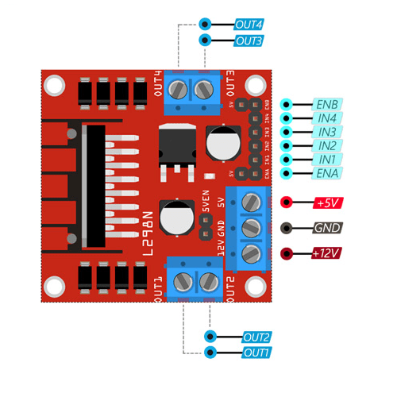

L298 Motor Driver and N20 Gear Motor Tutorial with Arduino Nano and 9V Battery¶

The L298 motor driver is a versatile component that can drive two DC motors or one stepper motor. This tutorial will guide you through the basics of setting up and using the L298 motor driver with an N20 gear motor and an Arduino Nano powered by a 9V battery.
Requirements¶
- L298 Motor Driver
- Arduino Nano
- N20 Gear Motor
- 9V Battery and battery clip
- Breadboard and jumper wires
- Arduino IDE installed on your computer
Setup¶
Wiring the L298 Motor Driver to Arduino Nano and N20 Gear Motor¶
- Power and Ground Connections
- 12V and GND on L298: Connect the positive terminal of the 9V battery to the 12V input of the L298 motor driver and the negative terminal to the GND input.
- 5V on L298: Connect the 5V output of the L298 to the 5V pin on the Arduino Nano.
-
GND on L298: Connect one of the GND pins on the L298 to the GND pin on the Arduino Nano.
-
Control Pins
- IN1 (L298) -> D2 (Nano)
- IN2 (L298) -> D3 (Nano)
-
ENA (L298) -> D9 (Nano) (If PWM speed control is needed)
-
Motor Connections
- OUT1 (L298) -> Motor Terminal 1
- OUT2 (L298) -> Motor Terminal 2
Installing the Arduino Motor Library¶
- Open the Arduino IDE.
- Go to Sketch > Include Library > Manage Libraries.
- In the Library Manager, search for "AFMotor".
- Find the "Adafruit Motor Shield library" and click Install.
Basic Code Example¶
// Define motor pins
#define IN1 2
#define IN2 3
#define ENA 9
void setup() {
// Initialize motor control pins
pinMode(IN1, OUTPUT);
pinMode(IN2, OUTPUT);
pinMode(ENA, OUTPUT);
// Start serial communication
Serial.begin(9600);
}
void loop() {
// Motor forward
digitalWrite(IN1, HIGH);
digitalWrite(IN2, LOW);
analogWrite(ENA, 255); // Full speed
delay(2000); // Run for 2 seconds
// Motor stop
analogWrite(ENA, 0);
delay(1000); // Stop for 1 second
// Motor backward
digitalWrite(IN1, LOW);
digitalWrite(IN2, HIGH);
analogWrite(ENA, 255); // Full speed
delay(2000); // Run for 2 seconds
// Motor stop
analogWrite(ENA, 0);
delay(1000); // Stop for 1 second
}
Code Explanation¶
- Pin Definitions: Sets up the pin connections for controlling the motor.
- Motor Control: Uses
digitalWriteandanalogWritefunctions to control the direction and speed of the motor. - Motor Forward: Sets IN1 high and IN2 low to drive the motor forward.
- Motor Backward: Sets IN1 low and IN2 high to drive the motor backward.
- Motor Stop: Sets the ENA pin to 0 to stop the motor.
Running the Code¶
- Connect your Arduino Nano to your computer via USB.
- Open the Arduino IDE and paste the code above.
- Select the correct board (Arduino Nano) and port under Tools.
- Upload the code to your Arduino Nano.
- The motor should run forward for 2 seconds, stop for 1 second, run backward for 2 seconds, and then stop for 1 second, repeating this cycle.
Tips¶
- Ensure your wiring is secure to avoid intermittent connections.
- Use a heat sink on the L298 motor driver if you are running the motor for extended periods or under heavy load.
- Adjust the
analogWritevalue on the ENA pin to control the motor speed (0-255).
Troubleshooting¶
- Motor Not Running: Check the wiring, ensure the correct voltage is supplied.
- Incorrect Direction: Swap the motor connections or check the control pin logic.
- No Output: Verify the baud rate of the Serial Monitor matches the one set in the code (if applicable).
Additional Resources¶
This simple tutorial should get you started with using the L298 motor driver with your N20 gear motor and Arduino Nano. Experiment with different setups and speeds to fully explore its capabilities. Happy experimenting!
Tasks¶
Now that you have the basic setup, here are three tasks of increasing difficulty to help you further explore the capabilities of the L298N motor driver with your N20 gear motors.
Task 1: Change the Motor Speed¶
Objective¶
Modify the motor speed using PWM (Pulse Width Modulation).
Instructions¶
- In the existing code, adjust the
analogWritevalue on the ENA pin to control the motor speed. - Experiment with different values (0-255) to observe the speed changes.
Code Example¶
void loop() {
// Motor forward at half speed
digitalWrite(IN1, HIGH);
digitalWrite(IN2, LOW);
analogWrite(ENA, 128); // Half speed
delay(2000); // Run for 2 seconds
// Motor stop
analogWrite(ENA, 0);
delay(1000); // Stop for 1 second
// Motor backward at quarter speed
digitalWrite(IN1, LOW);
digitalWrite(IN2, HIGH);
analogWrite(ENA, 64); // Quarter speed
delay(2000); // Run for 2 seconds
// Motor stop
analogWrite(ENA, 0);
delay(1000); // Stop for 1 second
}
Explanation¶
- Speed Control: The
analogWritefunction controls the speed of the motor by varying the PWM signal. Values range from 0 (stop) to 255 (full speed).
Task 2: Connect the Second Motor¶
Objective¶
Connect and control a second N20 gear motor using the second channel of the L298N motor driver.
Wiring¶
- Motor Connections
- OUT3 (L298N) -> Motor2 Terminal 1
-
OUT4 (L298N) -> Motor2 Terminal 2
-
Control Pins
- IN3 (L298N) -> D4 (Nano)
- IN4 (L298N) -> D5 (Nano)
- EN B (L298N) -> D10 (Nano) (If PWM speed control is needed)
Code Example¶
// Define motor pins
#define IN1 2
#define IN2 3
#define ENA 9
#define IN3 4
#define IN4 5
#define ENB 10
void setup() {
// Initialize motor control pins
pinMode(IN1, OUTPUT);
pinMode(IN2, OUTPUT);
pinMode(ENA, OUTPUT);
pinMode(IN3, OUTPUT);
pinMode(IN4, OUTPUT);
pinMode(ENB, OUTPUT);
// Start serial communication
Serial.begin(9600);
}
void loop() {
// Motor1 forward at full speed
digitalWrite(IN1, HIGH);
digitalWrite(IN2, LOW);
analogWrite(ENA, 255); // Full speed
// Motor2 forward at half speed
digitalWrite(IN3, HIGH);
digitalWrite(IN4, LOW);
analogWrite(ENB, 128); // Half speed
delay(2000); // Run for 2 seconds
// Both motors stop
analogWrite(ENA, 0);
analogWrite(ENB, 0);
delay(1000); // Stop for 1 second
// Motor1 backward at half speed
digitalWrite(IN1, LOW);
digitalWrite(IN2, HIGH);
analogWrite(ENA, 128); // Half speed
// Motor2 backward at full speed
digitalWrite(IN3, LOW);
digitalWrite(IN4, HIGH);
analogWrite(ENB, 255); // Full speed
delay(2000); // Run for 2 seconds
// Both motors stop
analogWrite(ENA, 0);
analogWrite(ENB, 0);
delay(1000); // Stop for 1 second
}
Explanation¶
- Dual Motor Control: This code controls two motors independently using the L298N motor driver.
Task 3: Execute a Turn¶
Objective¶
Execute a turn by controlling the speed and direction of two motors.
Instructions¶
- To turn, one motor should run forward while the other runs backward.
- Adjust the speed and duration to make a smooth turn.
Code Example¶
void loop() {
// Move forward
digitalWrite(IN1, HIGH);
digitalWrite(IN2, LOW);
analogWrite(ENA, 255); // Full speed
digitalWrite(IN3, HIGH);
digitalWrite(IN4, LOW);
analogWrite(ENB, 255); // Full speed
delay(2000); // Run for 2 seconds
// Turn right
digitalWrite(IN1, HIGH);
digitalWrite(IN2, LOW);
analogWrite(ENA, 255); // Full speed
digitalWrite(IN3, LOW);
digitalWrite(IN4, HIGH);
analogWrite(ENB, 255); // Full speed
delay(1000); // Turn for 1 second
// Move forward
digitalWrite(IN1, HIGH);
digitalWrite(IN2, LOW);
analogWrite(ENA, 255); // Full speed
digitalWrite(IN3, HIGH);
digitalWrite(IN4, LOW);
analogWrite(ENB, 255); // Full speed
delay(2000); // Run for 2 seconds
// Stop
analogWrite(ENA, 0);
analogWrite(ENB, 0);
delay(1000); // Stop for 1 second
}
Explanation¶
- Turning Mechanism: By setting one motor to run forward and the other to run backward, the vehicle can turn. Adjust the duration and speed to achieve the desired turning angle.
These tasks will help you understand how to control motor speed, connect multiple motors, and execute turns with the L298N motor driver and Arduino Nano. Experiment with different values and configurations to fully explore the capabilities of your setup. Happy tinkering!